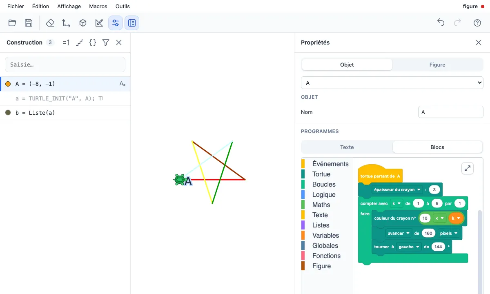
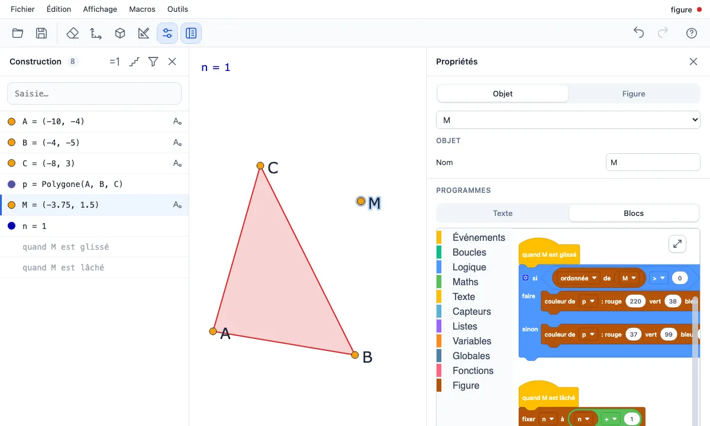
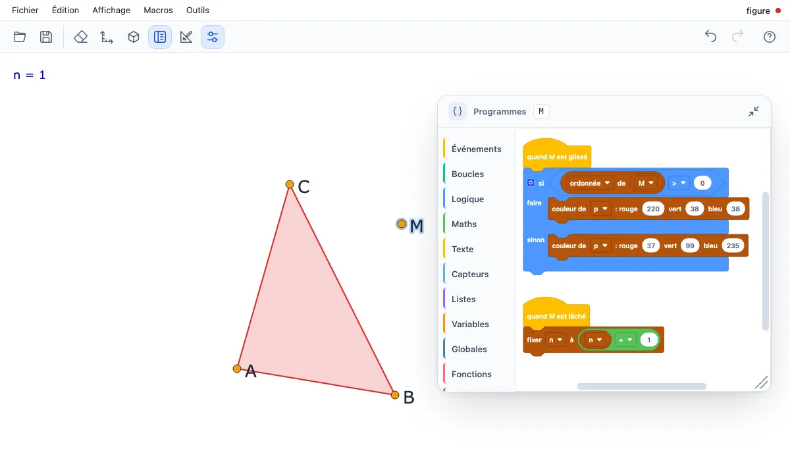

Expressions et curseurs
Expressions
Toute ligne qui n’est ni un point ni une commande crée une expression, affichée en haut à gauche avec deux décimales. Sa nature se déduit du texte :
| Ligne | Nature |
|---|---|
a = 3,
liste = [1, 2, 3]
|
constante |
t = "Bonjour" |
texte |
f = 0.5x^2 - 4 |
fonction de x (y, z, t) ;
f(2) l’appelle,
f'(2) appelle sa dérivée
|
f(x) = ax^2 + bx + c |
courbe de la fonction, tracée :
ax se lit a x, les curseurs a, b, c
sont créés ; f(2) l’appelle aussi
|
f(x) = x^2, (-1 <= x <= 2)
|
courbe tracée sur un intervalle, écrit comme
dans GeoGebra (≤ ou
<=) ; une borne peut manquer
((x >= 0)), et chaque borne être
une formule ((0 <= x <= a))
|
E = d(A, B) |
mesure, recalculée quand la figure bouge |
u = "AB = " + round(d(A, B)*100)/100
|
texte calculé |
Dans une formule, un point vaut ses coordonnées, un segment sa longueur, un cercle son rayon, un polygone son aire, un angle sa mesure. Syntaxe complète : Formules et programmes.
Une expression se déplace en glissant son texte ; attachée à un point, elle le suit. La toucher la sélectionne, ou écrit son nom pendant une saisie. Elle se place par pas de 10 pixels, ce qui facilite les alignements.
Curseurs
r = Curseur(0, 5, 2) : de 0 à 5, valeur 2. Les
bornes peuvent être des expressions ou des formules (Curseur(0, d(A, B), 1)). Pas, longueur, orientation, poignée et animation se règlent
dans les propriétés.
r = 5 en refait une constante. Sélectionné, il
s’anime aussi
au ressort.
Glisser l’extrémité de sa barre l’allonge ou la raccourcit, par pas de 20 pixels.
Un nom inconnu commençant par une minuscule crée un curseur de
−5 à 5, de pas 0,1 et de valeur 1 : A = (a, 4),
d = y = m x + p. Une lettre grecque crée un angle
de 0 à 360°, de pas 1° et de valeur 45° (de 0 à 2π en radians) :
P = (3; α). Une ligne refusée ne garde pas ses
curseurs.
Points calculés
-
M = (x(B) + 1, y(A)): coordonnées données par des formules. -
N = Point(2*B - A): formule dont la valeur est un point. -
P = (3; 60°): coordonnées polaires, rayon et angle.
Quand la valeur d’une ligne nom = formule est un
point ou une liste de points, des boutons en bout de ligne
proposent Point,
Liste de points,
Liste de segments ou
Expression.
Entrée prend le bouton allumé : point ou liste pour
un nom en majuscule, expression sinon. D’où
liste = [1, 2, 3] et non
L = [1, 2, 3], qui serait lu comme un point de
l’espace.
Listes de points
q = Liste(pts) dessine les points de l’expression
pts ; un point non défini coupe le tracé. Une
expression de valeur liste de points sélectionnée propose aussi
et
dans la zone contextuelle (et
pour une valeur point) : la ligne
est écrite et l’expression cachée.
L = {A, (1, 2), Point(A + [1, 0])} : liste de
points écrite entre accolades, chacun donné par son nom, ses
coordonnées ou une formule. Polygone(L) est le
polygone de ses points ; Élément(L, 2), ou
L(2) dans un argument, son deuxième point :
Droite(L(1), L(2)). Une suite s’utilise de même :
Polygone(Séquence((cos(k*360°/n), sin(k*360°/n)), k, 1,
n))
change de nombre de sommets avec le curseur n.
Suites
L = Séquence((k, k^2), k, -2, 2) place les points
(k, k²) pour k de −2 à 2, par pas de 1 ; un cinquième argument
donne un autre pas. L’élément peut aussi être un nombre,
Segment(P, Q), Droite(P, Q),
Cercle(O, r) ou Polygone(A, B, C, …),
dont les arguments sont des formules en k :
Séquence(Cercle(A, k), k, 1, 3). Dans l’espace, un
troisième argument donne la direction u de l’axe du cercle,
orthogonal à son plan : Cercle(O, r, u).
Une suite peut en contenir une autre, dont les bornes lisent la
variable de la première :
Séquence(Séquence((i, j), j, 1, i), i, 1, 4). Dans
une formule, une liste de points se lit par son nom, à partir de
0 : L[0], L[k-1],
L[i][j] pour des suites imbriquées,
L.length pour son nombre d’éléments. Écrire
2*i : 2i est un nombre complexe.
Programmes
Une expression peut être un programme : instructions séparées
par ;, la dernière donnant la valeur ; il peut
mettre en forme d’autres objets (S1.setHidden(1)).
Langage :
Formules et programmes.
- (palette, famille « Programmes ») ouvre un programme vide ; Créer ou Ctrl Entrée crée l’expression.
- Pour une expression existante, la section Définition des propriétés édite le texte sur plusieurs lignes : Entrée garde l’indentation, Tab indente, } désindente, Ctrl Entrée applique, Échap rétablit, Mettre en forme indente selon les accolades.
- Une erreur sélectionne la ligne fautive ou le délimiteur non apparié.
Blocs et tortue
Un programme s’écrit aussi en blocs : la section Définition passe de Texte à Blocs. Les blocs se tirent des catégories (Boucles, Logique, Maths, Texte, Capteurs, Listes, Variables, Globales, Fonctions, Figure) et s’accrochent sous le bloc programme ; un bloc renvoyer donne la valeur. Chaque changement s’applique aussitôt et s’annule comme les autres. Texte et blocs montrent le même programme : le choix est gardé pour les suivants.
Les globales, que tous les programmes de la figure partagent, se créent dans la catégorie Globales par Créer une globale… ; un programme les fixe, les augmente ou les lit. Dans un classeur, elles sont communes à toutes les pages : une globale fixée dans une page a la même valeur dans les autres.
Dans la catégorie Listes, le bloc L [ i ] lit l’élément n° i d’une liste, le premier étant le n° 1, et le bloc L [ i ] = v change celui d’une variable ou d’une globale.
Le bloc dernier élément de lit le dernier élément d’une liste ; ajouter … à la fin de allonge la liste d’une variable et retirer le premier élément de (ou le dernier) la raccourcit. rompre la liste interrompt la ligne tracée par une liste de points, comme le crayon levé de la tortue : les points ajoutés ensuite commencent une nouvelle ligne.
Dans la catégorie Boucles, le bloc attendre … ms fait une pause dans le programme d’un bouton, la figure se redessinant pendant ce temps : de quoi animer pas à pas. Toucher de nouveau le bouton arrête le programme en cours.
Dans la catégorie Capteurs, le bloc
demander … et attendre pose une question et
arrête le programme jusqu’à la réponse, tapée dans un champ et
validée par OK ou Entrée ; le bloc réponse la
lit ensuite, comme un nombre si c’en est un (12,5),
sinon comme un texte. Chaque lancement du programme a sa propre
réponse.
Dans la catégorie Fonctions, une fonction peut aussi donner une valeur : le bloc pour … retourner crée un bloc qui l’appelle et se place comme une valeur. Les variables d’un programme sont partagées par ses fonctions, sauf dans les fonctions des figures DGPad, qui gardent pour elles les variables qu’elles définissent, comme dans DGPad.
La catégorie Figure donne aussi l’angle de
trois points (angle 180°, entre 0 et 180°, ou
360°, orienté), la
largeur de la fenêtre, l’unité en pixels
et les autres grandeurs de la vue ;
flèches de … met des flèches au bout des
segments d’une liste (longueur et largeur en pixels). Le bloc
expression reçoit une formule tapée,
f(t) par exemple pour calculer une fonction de la
figure. Dans la catégorie Texte,
afficher le message montre un message.
Tortue, dans la zone contextuelle d’un point, crée la tortue qui part de ce point et l’ouvre en blocs. Elle avance (en pixels ou en unités), tourne (en degrés), lève ou baisse le crayon, change de couleur et d’épaisseur, remplit, écrit, se tourne vers un point ou y va. Son dessin, une liste, suit le point et les objets que lit le programme. Tant que son programme est affiché, la tortue est dessinée là où elle finit, tournée dans sa direction (une flèche en 3D, verte quand son dessus est tourné vers soi) : chaque bloc ajouté la montre avancer ou tourner.

Le bloc image de la catégorie Tortue pose une
image centrée à l’endroit où se trouve la tortue et tournée dans
sa direction. Il reçoit son adresse web ou un texte
data:image/…. largeur et
hauteur sont en pixels (à -1, l’image garde sa
taille), zoom l’agrandit ou la réduit (1 :
taille inchangée) et opacité va de 0 à 1.
Les tortues des figures DGPad s’ouvrent de même : panneau de
propriétés ouvert, toucher leur ligne
blk_turtle_exp_… dans le panneau « Construction ».
Un programme qui a une instruction sans bloc reste en texte.
Les boutons des figures DGPad (une flèche suivie d’un libellé) lancent leur programme quand on les touche, même panneau de propriétés ouvert : on essaie ainsi le programme pendant qu’on le modifie. Toucher leur cercle à trois points sélectionne le bouton, le glisser le déplace ; Réglages, dans la zone contextuelle, ouvre son programme en blocs. Le bloc fixer … à de la catégorie Figure change la valeur d’une expression.
Tortues et boutons se créent aussi par la palette d’outils,
famille Programmes :
Tortue part du point désigné (un endroit vide
en crée un), Bouton se
pose à l’endroit désigné ; chacun ouvre aussitôt son programme
en blocs. Tapée dans la ligne de saisie,
Bouton("Lancer") crée un bouton au centre de la vue
; sa ligne du panneau « Construction » change son libellé.
Programmes d’événements
Comme dans Scratch, un programme peut répondre à un événement : un point déplaçable qu’on glisse, qu’on appuie ou qu’on lâche, une expression dont la valeur change. Il met en forme des objets et, par le bloc fixer … à, change la valeur d’une expression ou place un point libre. Le programme « glissé » tourne aussi quand le point est animé.
Dans la palette d’outils, famille Programmes, Quand l’objet est glissé, Quand l’objet est appuyé et Quand l’objet est lâché désignent un point déplaçable, Quand la valeur change une expression. Le programme s’ouvre en blocs sous son bloc de départ, quand M est glissé par exemple ; s’il existe déjà, il est montré.

Ici, glisser M colore le triangle en rouge au-dessus de l’axe des abscisses, en bleu dessous ; le lâcher augmente n de 1.
- La section Programmes des propriétés d’un point ou d’une expression montre tous ses programmes, sa tortue comprise, chacun sous son bloc de départ et modifiable. Texte montre celui où l’on a cliqué en dernier.
- Sans programme, Ajouter un programme ouvre la catégorie Événements : tirer un bloc de départ dans l’espace de travail crée le programme.
-
Chaque programme a sa ligne dans le panneau « Construction
»,
quand M est glissépar exemple : la toucher l’ouvre. - Glisser une pile sur la liste des catégories, ou supprimer son bloc de départ, supprime le programme.
- Clic droit sur un bloc de départ : Réduire la pile n’en laisse que ce bloc, une pastille donnant son nombre de blocs ; un clic sur la pastille ou Développer la pile la rouvre.
- Clic droit sur le fond : Copier tous les blocs ; sur un bloc : Copier les blocs sélectionnés copie ce bloc et ceux qui le suivent. Coller les blocs les pose à l’endroit du clic, pour le même objet, un autre ou une autre figure. Copiés avec leur bloc de départ, ils vont sous le même bloc de départ de l’objet s’il est vide, le programme étant créé si besoin ; sinon ils restent à côté, à brancher.
-
Un bloc sélectionné qui nomme un objet (catégorie
Figure), ou dans lequel un tel bloc est
branché, prend le nom de l’objet sur lequel on clique
ensuite dans la figure : le bloc
adedéfinir n à asélectionné, un clic sur le curseur b donnedéfinir n à b. Un clic dans le vide de l’espace de travail lâche le bloc : un clic sur un objet montre alors ses propriétés.
Le bouton en haut à droite des blocs les agrandit sur la figure, dans une fenêtre transparente : les panneaux s’effacent, la figure reste en place. La fenêtre se déplace par sa barre de titre (un double clic la remet à sa place) et se redimensionne par son coin ; le même bouton ramène les blocs dans le panneau.

Les programmes d’événements des figures DGPad (glisser, appuyer et relâcher un point, changement d’une valeur) s’ouvrent et se modifient de même.
Le programme d’ouverture d’une expression ou d’un bouton d’une figure DGPad tourne une fois, quand la figure s’ouvre ; il se montre sous le bloc de départ quand la figure s’ouvre.